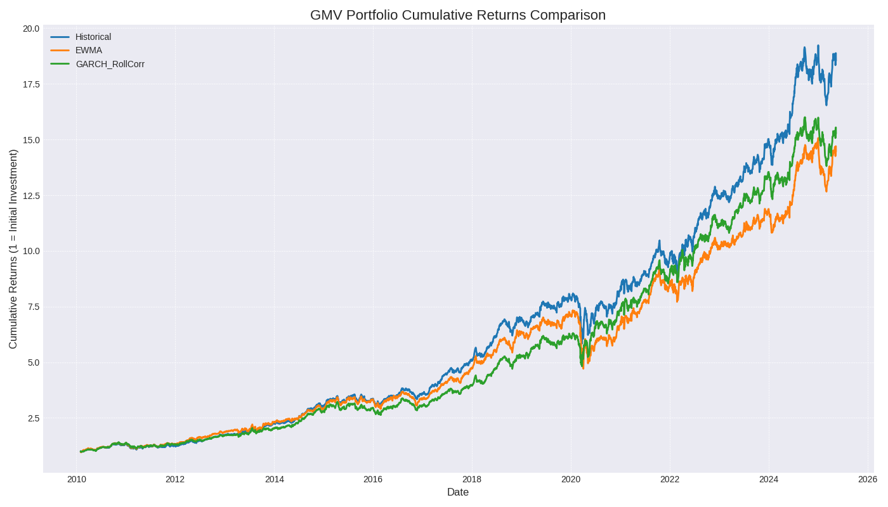
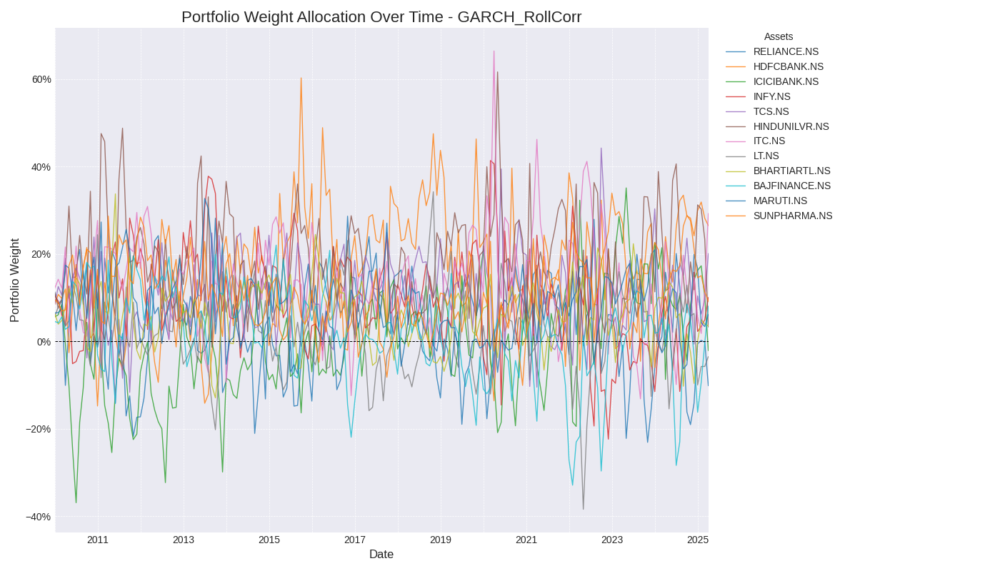

The Problem: Static Risk in Dynamic Markets
Effective portfolio management hinges on a precise understanding of asset interdependencies, quantified by the covariance matrix. Traditional finance often simplifies this by assuming static covariances.
However, financial markets are inherently dynamic:
- Inter-asset correlations morph, often amplifying during systemic shocks.
- Volatility ebbs and flows, clustering in response to information cascades.
Neglecting these dynamics leads to flawed risk assessments and suboptimal investment strategies. This project confronts this by exploring models that adapt to changing market conditions.
Price trends of selected NIFTY 50 stocks (Jan 2010 - May 2025).
Our Methodology: A Comparative Framework
We engineered a systematic pipeline to dissect the efficacy of three distinct covariance forecasting paradigms. The Global Minimum Variance (GMV) portfolio strategy served as our crucible, testing how each model's forecasts translate into risk-minimization performance within the Indian equity landscape (12 selected NIFTY 50 stocks, Jan 2010 - May 2025).
1. Data Foundation
Daily log returns, preprocessed for stationarity (ADF tests confirmed).
2. Covariance Engines
Historical Rolling, EWMA (decay factor lambda, λ = 0.94), GARCH(1,1)-RollCorr (Student's t-dist, 60-day correlation window).
3. Backtesting Rig
GMV portfolios, monthly rebalancing. Metrics: Returns, Vol, Sharpe, Sortino, Calmar, Drawdown, Turnover.
Data Insight: Volatility clustering observed in daily log returns.
Models Deconstructed
Historical Rolling Covariance
Calculates sample covariance using a 60-day rolling window. Simple, but slow to adapt and gives equal weight to all past data in the window.
EWMA (Exponentially Weighted Moving Average)
Assigns exponentially decaying weights (using a decay factor lambda, λ = 0.94), prioritizing recent data. More responsive than simple rolling.
GARCH-RollCorr Hybrid
A two-stage model: 1) Univariate GARCH(1,1) for individual asset volatilities. 2) Rolling 60-day correlation on GARCH standardized residuals. Combines DtRtDt (where Dt is the diagonal matrix of GARCH conditional volatilities and Rt is the dynamic correlation matrix) for the final covariance. Captures volatility clustering and dynamic correlations.
Empirical Performance & Insights
GMV Portfolio: Comparative Metrics
| Strategy | Cum. Return | Ann. Return | Ann. Volatility | Sharpe Ratio | Max Drawdown | Sortino Ratio | Calmar Ratio |
|---|---|---|---|---|---|---|---|
| Historical | 17.5370 | 0.2304 | 0.1560 | 1.4764 | -0.2792 | 2.0896 | 0.8253 |
| EWMA | 13.4565 | 0.2130 | 0.1711 | 1.2453 | -0.3583 | 1.7012 | 0.5945 |
| GARCH-RollCorr | 14.2588 | 0.2144 | 0.1553 | 1.3805 | -0.2365 | 1.9195 | 0.9063 |
Risk-free rate assumed at 0%. Green indicates best for desirable metrics.
Wealth Trajectories
The GARCH-RollCorr strategy, despite not having the highest terminal wealth, exhibited superior risk control, evidenced by the smallest maximum drawdown and highest Calmar ratio. Historical model led in final returns but with greater volatility.
Portfolio Turnover
| Strategy | Average Turnover |
|---|---|
| Historical | 0.3998 |
| EWMA | 0.6323 |
| GARCH-RollCorr | 0.4615 |
EWMA showed the highest turnover, implying higher potential transaction costs. Historical was the most stable.
Weight Allocation Dynamics
The GARCH-RollCorr model (example shown) often adapted weights more dynamically, reflecting its responsiveness to changing risk estimates. Short positions were utilized by all unconstrained GMV strategies. (Note: Other weight allocation plots can be found in the 'images' folder: Historical_weights_allocation.png, EWMA_weights_allocation.png).
Conclusion & Future Horizons
Key Takeaways
Model selection in dynamic covariance forecasting critically influences portfolio risk-return outcomes. The GARCH-RollCorr model emerged as a strong contender for risk-averse strategies due to its superior drawdown control and volatility management. The simpler Historical model, while achieving high returns, did so with greater risk and lower turnover.
Limitations
This study used unconstrained GMV portfolios and did not factor in explicit transaction costs. The GARCH-RollCorr model is a practical simplification of more complex multivariate GARCH systems.
Future Research
- Incorporate transaction costs and liquidity constraints.
- Implement and compare full DCC-GARCH, BEKK, or other advanced models.
- Explore machine learning for direct covariance forecasting or regime identification.
- Test on different asset classes and portfolio strategies (e.g., Risk Parity).